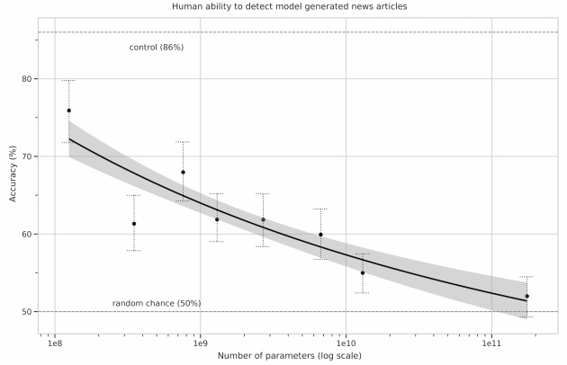
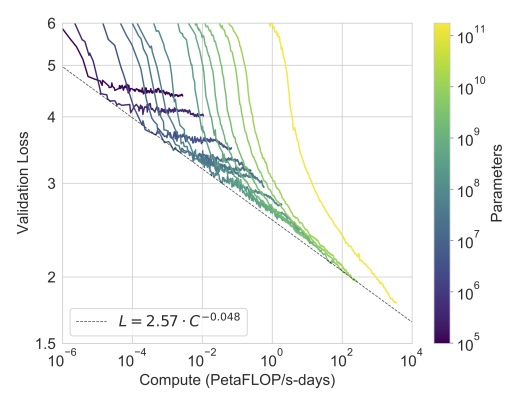

An alliance between the whimsical Elon Musk and the austere Bill Gates may come as a surprise. But it has just yielded its first fruit – and not a small one at that. A year after the agreement signed by the companies OpenAI and Microsoft, the “GPT-3” algorithm was officially announced on 28th of May, 2020 in a scientific publication (see here). Although it isn’t yet the super-intelligence transhumanists dream of, the breakthrough is significant enough to elicit real policy issues. Overview.
The internet in the blender
The performance of this oversized neural network (175 billion parameters) makes the world’s geeks and techno-skeptics fantasize and shiver at its capacity to imitate human beings in an incredible diversity of linguistic contexts. This includes not only translation, spelling correction, sentence auto-completion, but also answering open questions, writing texts that mimic the style of known authors and coding web pages – and even a surprising ability to solve arithmetic problems (links to applications here and here).
All this is done without any human supervision whatsoever: the neural network is simply trained to predict the next word within a gigantic linguistic corpus containing several billion sentences. To give an idea of the amount of data involved, the whole of Wikipedia represents a mere 3% of this dataset. Ultimately, it’s a big chunk of the Internet – saved every month by [the non-for-profit organization] Common Crawl – that goes through the blender, using the computational principle of the “Transformer” deep learning model for natural language processing developed just three years ago by engineers at Google. In short, this method allows a much deeper contextualization of the meaning of each word by considering the word’s position in the sentence and relying on a so-called “attentional” mechanism that enables the algorithm to relate distant linguistic units in such a way that it can link the subject, the verb and the direct object complement in a long sentence such as “The eight-year-old boy eats a juicy apple”. The algorithm can also take into account the semantic context linking different sentences in the same paragraph.
This text is not meant to be a review of all GPT-3 applications (GPT-3 stands for “Third-Generation Generative Pretrained Transformer”). But we do need to mention the most spectacular one: its success in passing the famous Turing Test – or at least, a particular version of Turing’s test, as it exists in numerous forms. OpenAI scientists indeed invited more than 600 participants to evaluate whether a series of short journalistic texts had been generated by an artificial intelligence or by a human. The verdict: the texts (generated from a title and a heading) by the most perfected version of the algorithm are indistinguishable (to human observers) from those generated by real-life journalists.

When size matters
Beyond this technical feat, the paper by OpenAI reports a much more significant result for the area’s future. To understand this, we have to consider a debate that’s being ongoing in the scientific community since the advent of “deep learning”. In spite of the impressive performance of these new networks, whose paternity is attributed to researcher Yann LeCun, head of the AI department at Facebook, many experts think that one or several conceptual breakthroughs will be needed to achieve the state of general artificial intelligence (GAI), that is, to produce an algorithm that substantially surpasses human intelligence. In other words, it will take some time, and many problems will have to be solved, before being able to even outline the path to such technology. This, by the way, has been the opinion of Yann LeCun himself during the numerous public conferences he has given to demystify AI (see here). But not everybody agrees, and certain points of view are less comforting. Some people think that the problem with GAI is mainly a problem of computing power, that is, a technological problem rather than a conceptual one.
And this is what makes the OpenAI paper interesting. Indeed, it shows that the increase in performance seems to be directly dependent on the increase of computing power, without any obvious sign of saturation. This means that, by constructing a super-computer even more powerful than the one lent by Microsoft to run GPT-3, we could achieve significantly better performance. Note that this strategy poses real problems given the energetic needs of super-computers…

Therefore, it cannot be excluded that a major breakthrough will be made simply by spending more money and means on the infrastructures (which Microsoft is planning to do). If this is the case, it is urgent to reflect collectively on the implications. Today, it is clear that the sector’s dominant actors – Google, Facebook, and OpenAI – are of two minds. On one side, they wish to communicate their progress so as to attract the best scientists and, on the other, they fear eliciting an excessive reaction from public opinion, which could translate into consumer boycotts or a coordinated legal effort at the international scale. The assessment of what it will take to develop a machine even remotely similar to an GAI has an obvious impact on how politicians and the media consider this technology. Right now, no one knows how far we have come, but progress has clearly been huge in every field directly linked to AI, starting with linguistic modeling, statistics, and neuroscience.
A partnership with Microsoft: the dark side of the Force?
“OpenAI was about the democratization of AI power. So that’s why [it] was created as a nonprofit foundation, to ensure that AI power … or to reduce the probability that AI power would be monopolized.” Elon Musk, in an interview with Kara Swisher in 2018
Until very recently, OpenAI was an exception in the field of private AI. As its name suggests, almost all its work was shared on the Github platform, making it difficult to envision how the company planned to monetize its research. Could this have been a real philanthropic effort on the part of Elon Musk, always so keen to criticize the Google and Facebook models? In any case, his attitude allowed OpenAI to catch up with the two giants by attracting ethically aware young talent. But since Microsoft became a shareholder, the paradigm shift has been brutal. Not only has OpenAI officially become a for-profit company, but most of all, contrary to its predecessor GTP-2, GTP-3 is not open at all: its code has not been published and access to this AI is very slow and non-transparent.
The reason invoked: the technology is too “dangerous” to be shared with the public. Reality: Microsoft’s presence in OpenAI’s capital signals a change in the business model. An ultra-powerful AI is being trained on an extremely expensive computer and people wanting to use this AI will, from now on, have to pay a subscription that will give them no access to the code or the super-computer, but only to an interface allowing them to submit requests and retrieve the corresponding results. True, a waiting line still gives some scientists or developers access to the interface for free, but it is obvious that this mainly allows OpenAI to crowdsource the search for applications of their tool. As soon as the most fruitful niches are identified and sufficiently publicized in the media, the odds are that everyone will be charged for the service.
It so happens that mastering such technology as GPT’3 will rapidly become synonymous with mastering the web, in the sense that it will enable studying correlations and perhaps causality links between the innumerable events that crisscross it. What will be the short, medium and long-term consequences of the Beirut explosions on public opinions? How will Brexit affect the relationship between Europeans and Britons? Are the Iranians angry enough at their government to successfully carry out a destabilization operation? Are the French for or against reelecting Macron? Which banks and companies will crumble after the pandemic? These geopolitical stakes are already at the heart of the question because artificial intelligence already has the unique capacity to link and synthesise vast and disparate amounts of data at a scale that no human being could ever attain. And for the time being, we are just talking about the ability to “see” the world through the prism of AI, not to control it – which would mean to promote one scenario over another by facilitating or limiting the transmission of certain information.
The European lag in AI and Big Data
Given this outlook, a technophobic setback cannot be excluded. But this might adversely affect society as a whole, because technology will continue to progress, with or without people’s consent. It seems to me that the big issue is rather that of the public control of this technology. We know that Europe lags far behind the United States and China in terms of Big Data and AI. Europe has no social network, no search engine, no e-commerce online platform, no video engine that could even attempt to compete with Facebook, Google, Amazon and Youtube. Although heightened awareness has led to advances in terms of the collection and storage of data by these companies, the issue of what they do with the data is still a secondary concern. But the fact is that even with RGPD filtering, even if we consider only the public web, an enormous amount of data remains accessible to AI algorithms. Simply put, OpenAI currently processes public data with a private algorithm, while Google and Facebook process private data with (relatively) public algorithms. In both cases, intelligence – in the sense of information – has been privatized. And in both cases, the huge supercomputers dedicated to data processing are inaccessible to scientists, NGO and public authorities.

It is true that concrete applications of linguistic modeling and deep analysis of the web made possible by algorithms like GPT-3 are still incipient, but we must realize that a good part of goodInformation Research will use this type of system in the future. Instead of Google quests that return thousands of results, we will directly present our questions to a successor of GPT-3, whether we are “civilians” or researchers, journalists, or even military. Interaction with computers will become something different altogether. Whether they are super-intelligent, intelligent, conscious or not, these algorithms will become our de facto daily contact points in a decade, maybe two. Even though they are still anecdotal due to their limited performance, the principle is already at work in Siri or Google Voice.
Towards a public European AI?
Unlike the issues related to privacy, AI is not yet a true object of ethical debate or strategic reflection. This debate is often squeezed between two equally naïve positions: on one side, optimists trust private actors such as GAFAM to self-regulate; on the other, pessimists already envision a catastrophic future – a mix between 1984, Brave New World and Minority Report. And in both cases, inaction wins. Will we have to wait for something as huge as the Cambridge Analytica scandal for European governments to decide that they have to deal with the issue? Focusing only on the risks related to so-called “astroturfing” and violations of privacy, no matter how real these are, is not enough. Even if we can limit data leaks, control their storage and limit the influence of the networks on electoral choices, we will be unable to keep China and the United States from developing more and more sophisticated artificial intelligence algorithms.
The only viable option seems to be entering the race and competing with the other superpowers. Given the number of European engineers working in the AI departments of Google and Facebook, we clearly have the means to do it. And at a time when Silicon Valley is implementing huge neural networks capable of digesting the whole web for commercial and perhaps military purposes, we Europeans may even have the duty to do it. In plain language, this means Europe has to urgently catch up to allow artificial intelligence technologies to remain (or again become) public tools dedicated to research and the pursuit of the common good.
More than ever, it is necessary to envision a public and transparent AI serving knowledge and progress. The good news is that the European Union has just announced, on September 21, an eight billion euros investment plan dedicated to the acquisition of supercomputers. It now remains to be seen how these funds will be put to use.
Additional reading
A comprehensive presentation of the GTP-3 Algorithm by Steve Omohundro
GPT-2, the predecessor of GPT-3, was used in numerous projects. Undoubtedly one of the most recreational is AIdungeon, which allows the user to directly interact with this 1.5-billion parameter neural network. The scripts of the short movies Bloomsday and Sunsprings were also generated by GPT-2.
Researcher Raphaël Millière used the GPT-3 algorithm to produce quite fascinating philosophical texts:
I asked GPT-3 to write a response to the philosophical essays written about it by @DrZimmermann, @rinireg @ShannonVallor, @add_hawk, @AmandaAskell, @dioscuri, David Chalmers, Carlos Montemayor, and Justin Khoo published yesterday by @DailyNousEditor. It’s quite remarkable! pic.twitter.com/W1PVlsHdu4 — Raphaël Millière (@raphamilliere) July 31, 2020
See also his methodology (notice that the algorithm was guided by the scientist), other texts on his Twitter account, and his detailed paper in Synced on the subject.
– Example of a journalistic text generated by the GPT-3 algorithm:
Title: United Methodists Agree to Historic Split
Subtitle: Those who oppose gay marriage will form their own denomination
Article: After two days of intense debate, the United Methodist Church has agreed to a historic split – one that is expected to end in the creation of a new denomination, one that will be «theologically and socially conservative,» according to The Washington Post. The majority of delegates attending the church’s annual General Conference in May voted to strengthen a ban on the ordination of LGBTQ clergy and to write new rules that will «discipline» clergy who officiate at same-sex weddings. But those who opposed these measures have a new plan: They say they will form a separate denomination by 2020, calling their church the Christian Methodist denomination. The Post notes that the denomination, which claims 12.5 million members, was in the early 20th century the «largest Protestant denomination in the U.S.,» but that it has been shrinking in recent decades. The new split will be the second in the church’s history. The first occurred in 1968, when roughly 10 percent of the denomination left to form the Evangelical United Brethren Church. The Post notes that the proposed split «comes at a critical time for the church, which has been losing members for years,» which has been «pushed toward the brink of a schism over the role of LGBTQ people in the church.» Gay marriage is not the only issue that has divided the church. In 2016, the denomination was split over ordination of transgender clergy, with the North Pacific regional conference voting to ban them from serving as clergy, and the South Pacific regional conference voting to allow them.
The information initially given to the algorithm (title and subtitle) is at the top, in bold characters; the rest of the text was generated automatically.